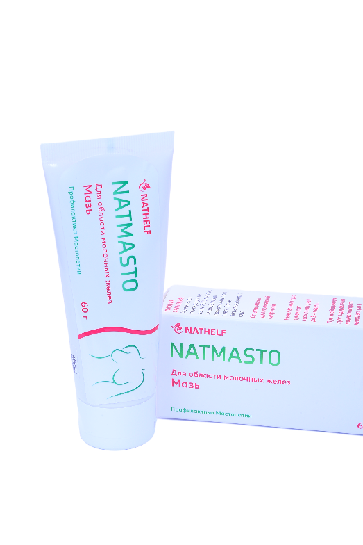

Natmasto — мазь на растительной основе для области молочных желёз. Профилактика мастопатии: способствует уменьшению боли и напряжения в молочных железах, поддерживает здоровье и комфорт каждый день.

Уменьшает фиброзную реакцию соединительной ткани и пролиферацию соединительно-тканной стромы или железистого эпителия ацинусов и млечных ходов, препятствует регрессии альвеолярно-глобулярной ткани молочной железы. При применении наблюдается уменьшение болевого синдрома и размера образований, вплоть до восстановления структуры молочной железы.
Применяется при узловых формах мастопатии, фиброаденомах, линогранулемах, атеромах, сосудистых опухолях, аденозах, внутрипротоковых папилломах, липомах и других доброкачественных изменениях молочных желёз.
Вода, липадерм 4/1, эмульсионный воск, соевое масло, ланолин, экстракт корневищ пиона, трава дурнишника, зюзник, подмаренник, спорыш, чистотел, шалфей лекарственный, цветки календулы, гермабен II. Туба 60 г.
2 раза в день мазь тонким слоем наносить на молочные железы. Грудь не массировать и не греть. Противопоказания: индивидуальная непереносимость компонентов. Срок годности — 2 года; хранить в сухом, защищённом от солнечного света месте при температуре от +5 до +25 °C.
📞 +998 95 155 56 88
✉ info@nathelf.com
📍 Ташкентская область, Зангиатинский район, махалля Янги Бозсув, улица Мунаввар, дом 355
Вернуться в каталог